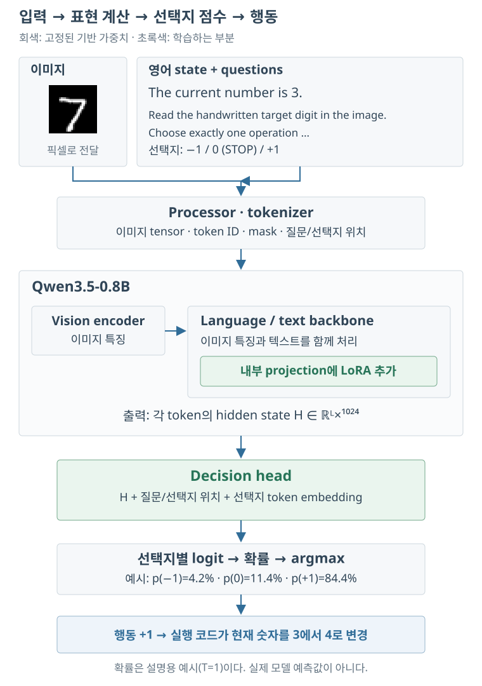
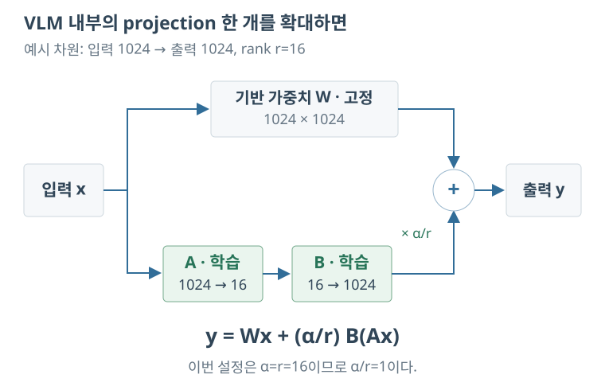
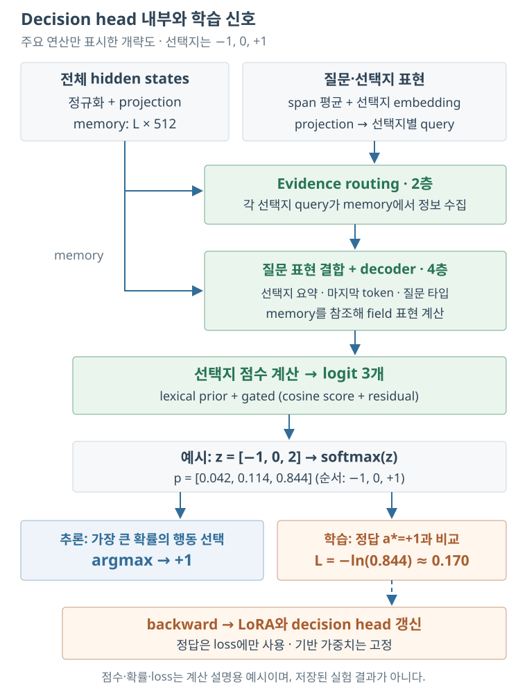

MNIST로 decision model 학습해 보기
Jev의 개념과 Unsloth를 이용한 Qwen3.5-0.8B 학습
Unsloth로 decision model을 학습해 보고, 그 과정을 MNIST 예제로 정리하였다. 이미지에 적힌 숫자를 목표로 주고 현재 숫자에서 +1, 0, −1 중 어떤 행동을 해야 하는지 고르는 문제이다. 문제 자체는 간단하지만, 모델의 입력을 어떻게 구성해야 하는지, 어느 부분을 학습하는지, 예측 확률과 실행 결과를 어떻게 평가해야 하는지를 확인하기에는 적당했다.
처음에는 학습을 진행해도 한쪽 행동만 선택하는 문제가 있었다. 작은 데이터셋을 외울 수 있는지부터 확인한 뒤 설정을 바꾸어 다시 학습하였다. 이 글에서는 그 과정과 결과를 순서대로 살펴본다. 중간의 학습 기록과 테스트 결과는 직접 배치를 선택하거나 실패 이미지를 조회할 수 있도록 넣었다.
실제로 학습한 모델은 Qwen3.5-0.8B에 Clef 방식 head와 LoRA를 붙인 모델이다. Jev 자체를 학습한 실험은 아니므로, 개념 설명과 실험 대상은 구분해서 읽으면 된다.
1. Jev와 decision model
먼저 여기서 말하는 decision model의 의미부터 정리해 보자. 일반적인 언어 모델에 질문을 주면 답변을 문장으로 생성한다. 반면 이 글에서 다루는 decision model은 입력과 함께 주어진 선택지에 점수를 매기고, 선택한 값과 각 선택지의 확률을 반환한다. 결과를 다른 프로그램의 조건문이나 제어 입력으로 바로 사용하려는 목적이다.
예를 들어 현재 상황을 나타내는 state와 세 개의 행동을 주었다면, 출력은 다음과 같은 형태가 된다. 아래 확률은 형식을 설명하기 위한 예시이다.
{
"action": "+1",
"probabilities": {"-1": 0.05, "0": 0.10, "+1": 0.85}
}
여기서 +1은 선택한 행동이고, 0.85는 그 행동에 부여한 확률이다. 선택지의 의미를 모델에 전달하므로 단순히 클래스 번호만 정해 놓는 분류기와는 입력 구성이 다르다. 다만 확률이 높다고 해서 그 판단이 반드시 맞는 것은 아니다. 실제로 이번 실험에서도 높은 확률로 틀리는 경우가 있었다.
1.1. Jev, Clef, 그리고 이 실험의 관계
Jev는 TypeSafe AI가 제공하는 decision model이다. 질문에는 선택지를 고르는 choice, 이진 확률을 다루는 noul, 정해진 척도를 사용하는 score 등의 타입이 있다. 여기서는 이 중 choice만 사용한다.
Clef는 Cloudflare가 공개한 decision model 계열로 Jev API와 호환된다. Unsloth에는 Clef 방식의 decision head를 기존 언어 모델에 붙여 학습하는 기능이 있다. 이 실험에서는 그 기능을 이용해 Qwen3.5-0.8B에 새 head를 붙였다. 따라서 아래의 수치는 Jev나 Cloudflare가 배포한 Clef 모델의 성능이 아니라, 직접 학습한 작은 모델의 결과이다.
학습 방법도 구분할 필요가 있다. Jev에서 설명하는 RLCD를 재현한 것은 아니며, 이 실험에서는 정답 행동을 주고 cross-entropy loss를 줄이는 지도학습을 수행하였다. 학습이 끝난 뒤에는 별도 데이터로 확률을 보정하였다.
2. MNIST로 문제 구성하기
decision model의 학습 과정을 확인하기 위해 MNIST로 간단한 이동 문제를 만들었다. 이미지에 적힌 숫자를 목표 t, 텍스트로 주어지는 현재 숫자를 s라고 하자. 모델은 현재 숫자가 목표에 가까워지도록 −1, 0, +1 중 하나를 선택해야 한다.
가령 이미지의 숫자가 7이고 현재 숫자가 3이면 +1이 정답이다. 현재 숫자가 8이면 −1, 7이면 0을 선택한다. 이를 식으로 쓰면 다음과 같다.
이때 0은 현재 숫자를 유지하고 실행을 종료하는 행동으로 정의하였다. 목표에 도달했는데도 +1이나 −1을 선택하면 다시 목표에서 멀어지고, 다른 숫자에서 0을 선택하면 잘못된 위치에서 멈추게 된다.
2.1. 이미지, state, questions의 구분
모델 입력은 다음과 같이 구성하였다. 이미지 부분은 표시용 문자열로 적었지만, 실제 코드에서는 PIL 이미지를 전달한다. MNIST의 28×28 영상을 RGB 112×112로 변환해 사용하였다. 이후 processor 내부에서도 이미지 처리가 이루어지므로 112×112를 모델 내부의 최종 처리 해상도로 해석하면 안 된다.
{
"images": ["MNIST image → RGB 112×112"],
"state": "The current number is 3.",
"questions": {
"move": {
"type": "choice",
"instructions": "Read the handwritten target digit in the image. Choose exactly one operation that moves the current number toward it. Choose 0 only when equal.",
"criteria": {
"-1": "Subtract one from the current number.",
"0": "Keep the current number and STOP: already equal to the image digit.",
"+1": "Add one to the current number."
}
}
}
}state에는 현재 숫자만 들어 있다. 이 부분만 보면 무엇을 해야 하는지 설명이 부족해 보이지만, 목적과 행동의 의미는 questions에 들어 있다. 모델은 이미지, state, questions를 함께 처리한다. 따라서 같은 설명을 state에 다시 적을 필요는 없다.
목표 숫자 t의 정답 label은 모델 입력에 넣지 않았다. 학습할 때는 이 label로 정답 행동을 계산하여 gold.move에 저장하고 loss 계산에 사용한다. 아래 배치 기록에 표시되는 목표 label도 결과를 해석하기 위한 정보이며, state에 포함되는 값은 아니다.
2.2. 영어 문장 생성
본학습의 state와 questions는 모두 영어로 통일하였다. state는 아래 네 가지 형식 중 하나를 사용하며, (image_id + current) % 4로 선택한다.
The current number is 3. My counter now reads 3. Start from three. The current value is 3.
별도의 표현 검사에는 The counter is currently at 3.를 사용하였다. 네 가지 문장을 사용했다고 해서 자연어 표현을 폭넓게 검증한 것은 아니다. 이 정도 변화에도 결과가 유지되는지를 살펴본 작은 검사로 보는 것이 맞다.
목표와 현재 숫자에 따른 행동
2.3. 행동 정확도와 에피소드 성공률
행동 정확도는 한 번의 입력에서 정답 행동을 골랐는지 측정한다. 에피소드 성공률은 같은 정책을 반복해서 실행했을 때 목표 숫자에서 제대로 멈추는지를 측정한다. 이미지마다 현재 숫자 0–9를 검사하고, 각 숫자를 출발점으로 삼아 이동 경로도 계산하였다.
두 지표는 꽤 다를 수 있다. 예를 들어 항상 +1을 선택하면 목표보다 작은 상태에서는 정답으로 처리된다. 그래서 행동 정확도가 40%를 넘을 수도 있다. 그러나 이 정책은 0을 선택하지 않으므로 목표에서 멈추지 못한다. 초기 실험에서 행동 정확도 43.4%, 에피소드 성공률 0%가 나온 것도 이 경우에 해당한다.
실패 조건은 잘못된 STOP, 같은 상태의 반복(cycle), 0–9 범위 이탈, 최대 20회 이내에 종료하지 못한 경우로 정하였다. 모델은 이미지와 현재 숫자만 입력받고 결정적으로 행동을 선택하므로, 각 상태의 예측을 한 번씩 구한 뒤 이를 재사용하여 경로를 계산할 수 있다.
3. 기반 VLM과 LoRA
기반 모델로는 unsloth/Qwen3.5-0.8B를 사용하였다. VLM(vision-language model)은 이미지와 텍스트를 함께 처리하는 모델이다. 이미지 특징을 만드는 vision encoder와 텍스트를 처리하는 부분을 통해 입력의 표현을 계산한다. 이 실험에서는 그 표현을 decision head에 전달하여 행동별 점수를 얻는다.

예를 들어 이미지에 7이 있고 현재 숫자가 3이라면, 모델은 이미지와 영어 입력을 함께 보고 세 행동의 점수를 계산한다. 그림에서는 +1의 확률이 가장 높으므로 실행 코드가 현재 숫자를 4로 바꾼다. 다음 판단에서는 같은 이미지에 새로운 현재 상태를 넣는다. 0을 선택하면 실행을 멈추며, 그 위치가 실제 목표와 같은지는 평가 코드에서 확인한다.
그림의 초록색 부분이 학습 대상이다. LoRA는 VLM 내부 계산에 참여하고, decision head는 그 결과를 받아 행동별 점수를 만든다. 학습을 마친 뒤 추론할 때도 LoRA와 head를 함께 사용한다. 추론 확률에는 뒤의 7절에서 설명하는 온도 보정을 적용할 수 있다.
| 모델 | 구성 | 이 글에서의 사용 |
|---|---|---|
| Qwen3.5-0.8B | hidden 1024, 24 layers, vision encoder | 학습 및 평가에 사용 |
| Qwen3.5-2B | hidden 2048, 24 layers, vision encoder | 아직 실험하지 않음 |
두 모델은 Gated DeltaNet과 gated attention을 함께 사용하는 구조이다. 2B 모델의 hidden dimension이 더 크지만, 이 문제에서 정확도가 얼마나 좋아지는지와 추론 시간이 얼마나 늘어나는지는 별도로 측정해야 한다.
3.1. 어떤 파라미터를 학습하는가?
기반 가중치는 고정하고 LoRA 파라미터와 decision head를 학습하였다. LoRA는 원래 가중치 W에 더할 변화량을 두 작은 행렬의 곱으로 표현하는 방법이다. 식은 다음과 같다.
예를 들어 W가 1024×1024 행렬이라면 원래 원소 수는 1,048,576개이다. rank r을 16으로 두고 B를 1024×16, A를 16×1024로 구성하면 두 행렬의 원소 수는 합쳐서 32,768개가 된다. 원래 행렬 전체를 바꾸는 대신 이 두 행렬을 학습하는 것이다. 자세한 내용은 LoRA 논문을 참고할 수 있다.
이번 설정은 r=16, α=16, dropout=0이다. 저장된 adapter 설정을 보면 language/text 부분의 attention, mixer, MLP projection이 대상이다. 기반 모델은 4bit로 읽고 연산에는 BF16을 사용하였다. 이때 모든 tensor가 4bit인 것은 아니다. LoRA와 head, activation, gradient, optimizer state에는 각각 별도의 메모리가 필요하다.

같은 입력 x가 두 경로로 나뉜다. 위쪽에서는 기존 W로 계산하고, 아래쪽에서는 작은 행렬 A와 B로 변화량을 계산한다. 두 결과를 더한 값이 다음 층으로 전달된다. backward는 이 계산을 거슬러 LoRA까지 도달하지만, optimizer가 수정하는 것은 A와 B이다. W는 학습 중에도 그대로 유지된다.
3.2. decision head의 구성
처음에는 decision head를 세 개의 출력값을 갖는 linear layer 정도로 생각하기 쉽다. 실제 구현을 보면 그보다 복잡하다. 저장된 설정은 입력 hidden size 1024, head width 512, evidence routing 2층, decoder 4층, attention head 8개, feed-forward dimension 2048이다.
head는 입력 sequence의 hidden states뿐 아니라 질문과 선택지에 해당하는 span, 선택지 token의 embedding도 사용한다. 선택지를 표현하는 query가 입력 memory에서 정보를 모으고, 질문 표현과 결합하여 선택지별 logit을 계산하는 구조이다. 구체적인 연산은 JointSchemaHead 구현과 저장 설정에서 확인할 수 있다.

여기서 memory는 별도의 저장소가 아니라, 이번 입력의 hidden states를 폭 512로 투영한 tensor이다. 선택지마다 만든 query가 memory에서 필요한 정보를 모으고, 질문에 대한 field 표현과 함께 점수를 계산한다. 실제 구현에는 정규화와 residual 연산도 포함되며 그림에서는 주요 연결만 표시하였다.
출력 단계에서 추론과 학습의 용도가 나뉜다. 추론에서는 가장 높은 점수의 행동을 선택한다. 학습에서는 정답 행동의 확률로 loss를 계산하고, 그 오차를 head와 VLM 내부 LoRA에 전달한다. 정답 숫자와 정답 행동을 VLM 입력에 덧붙여 답을 알려 주는 과정은 없다.
저장 파일의 tensor를 세면 LoRA는 10,822,656개, head는 27,324,932개의 파라미터를 갖는다. 합계는 38,147,588개이다. LoRA는 F32로, head는 대부분 BF16으로 저장되었고 세 scalar는 F32로 남아 있다. 저장 dtype과 연산 precision도 구분해서 볼 필요가 있다.
4. Unsloth 학습 코드의 처리 순서
이제 실제 코드가 처리하는 순서를 살펴보자. 학습 진입점은 train.py이고, 모델 생성과 예측은 model.py에 모아 두었다. 아래 설명은 설치되어 있던 Unsloth 2026.10.10의 구현을 기준으로 한다.
4.1. 모델과 데이터 준비
FastDecisionModel.from_pretrained로 모델과 processor를 읽은 뒤 get_peft_model로 LoRA를 붙인다. 최대 sequence 길이는 1024이고, gradient checkpointing을 사용한다. checkpointing은 중간 activation의 일부를 저장하는 대신 backward에서 다시 계산하여 메모리를 줄이는 방법이다.
다음으로 각 이미지에 대해 current=0부터 9까지 열 개의 row를 만든다. 한 row에는 이미지, 영어 state, questions, 정답 행동이 들어 있다. build_dataset은 이를 token ID, 이미지 tensor, 질문·선택지 위치, target 등으로 변환한다. 이 단계에서 row가 누락되거나 sequence가 잘리면 학습을 계속하지 않도록 검사하였다.
4.2. 배치 구성과 loss 계산
collator는 한 배치의 sequence 길이를 맞추고 attention mask와 target을 구성한다. 모델을 한 번 실행하면 각 선택지의 logit이 나온다. 여기에 softmax를 적용하여 확률 p를 구하고 정답 행동에 대한 cross-entropy를 계산한다.
정답 행동에 낮은 확률을 줄수록 loss가 커진다. 배치 loss는 샘플들의 loss를 평균한 값이다. backward에서는 LoRA와 head에 gradient가 계산되고, 고정된 기반 가중치는 업데이트하지 않는다.
4.3. 배치 크기와 gradient accumulation
microbatch는 한 번의 forward/backward에서 처리하는 샘플 묶음이고, optimizer step은 모아진 gradient로 가중치를 갱신하는 시점이다. 따라서 batch 1에 누적8을 사용하면 forward/backward를 여덟 번 한 뒤 한 번 갱신한다. batch 4에 누적2를 사용해도 한 update에 기여하는 샘플 수는 여덟 개로 같다.
본학습에서는 batch 32, 누적1을 사용하였다. 한 배치마다 optimizer가 갱신되므로 600 step은 19,200개의 샘플 노출에 해당한다. 같은 이미지나 row가 다시 나타날 수 있으므로 이 수치를 고유한 학습 데이터 수와 혼동하면 안 된다.
optimizer는 AdamW의 torch fused 구현이며, β1=0.9, β2=0.999, ε=1e-8, gradient clipping norm=1.0이다. DecisionTrainer가 encoder와 head의 parameter group을 나누므로 둘의 학습률을 따로 지정할 수 있다. weight decay는 decay 대상으로 분류된 파라미터에만 적용된다.
4.4. 기록, 검증, 저장
telemetry.py에서는 compute_loss(..., return_outputs=True)가 반환한 출력으로 각 샘플의 예측과 확률을 기록하였다. 즉 아래에 표시되는 값은 해당 학습 forward의 결과이다. 기록을 위해 최종 모델로 다시 추론한 값이 아니다.
100 step마다 validation을 수행하고, 학습이 끝나면 별도의 calibration 데이터로 온도를 적합한다. 그 후 LoRA와 head를 저장하고 새 프로세스에서 다시 불러와 테스트하였다. Unsloth의 일반적인 사용법은 공식 안내를 참고하면 된다. 이 실험의 전체 Trainer 설정은 checkpoint에서 추출한 설정 파일에 있다.
5. 실험 과정과 최종 설정
5.1. 처음 학습이 잘되지 않았던 경우
처음에는 batch 1, 누적8로 600 step을 학습하였다. 테스트 이미지 100장에 대한 행동 정확도는 43.4%였지만 에피소드 성공률은 0%였다. 예측을 확인해 보니 +1만 선택하는 상태였다. 이 경우에는 평균 loss나 행동 정확도만 보는 것으로 문제가 잘 드러나지 않는다.
저장 전후 가중치는 달라져 있었다. 따라서 gradient가 전혀 흐르지 않았다고 단정할 수는 없었다. 데이터와 step을 더 늘리기 전에, 훨씬 작은 문제라도 제대로 외울 수 있는지 확인할 필요가 있었다.
5.2. 30개 학습쌍으로 암기 확인
목표 숫자 2, 5, 8의 이미지를 각각 한 장씩 고르고, 각 이미지에 current 0–9를 붙여 30쌍을 만들었다. 이를 batch 30으로 반복 학습하였다. LoRA 학습률은 2e-4, head 학습률은 1e-3으로 두었다.
50번의 update 후에는 학습쌍 30개를 모두 맞혔다. 그러나 같은 숫자의 다른 이미지 세 장에서는 행동 정확도 76.7%, 에피소드 성공률 40%였다. 여기서 확인한 것은 우선 이 입력 처리와 학습 코드로 정답을 학습할 수 있다는 점이다. 학습 이미지에서 100%가 나왔다는 결과를 새로운 필체에 대한 성능으로 해석할 수는 없다.
5.3. 2,000장으로 확대
다음 실험에서는 사전학습된 기반 모델에서 새로 시작하여 0–9가 모두 포함된 학습 이미지 2,000장을 사용하였다. 작은 암기 실험의 가중치에서 이어서 학습한 것은 아니다. 각 이미지마다 current 열 개를 붙여 20,000개의 row를 만들었다.
이렇게 만들면 STOP의 정답 비율은 10%이다. 세 행동의 학습 개수를 맞추기 위해 부족한 행동의 row를 중복 추출했고, 균형화된 row pool은 27,336개가 되었다. 본학습에서는 그중 총 19,200개를 처리했으므로 약 0.7018 epoch에 해당한다.
- Run ID
- 20261030-010019
- Backbone
- Qwen3.5-0.8B · 4bit / BF16
- LoRA
- r16 / α16 / dropout 0
- Learning rates
- LoRA 2e-4 / head 1e-3
- Batch / accumulation
- 32 / 1 · single GPU
- Updates / exposures
- 600 / 19,200 rows
- Scheduler / warmup
- Cosine / 30 steps
- Optimizer
- AdamW torch fused · clip norm 1.0
- β1 / β2 / ε
- 0.9 / 0.999 / 1e-8
- Weight decay / seed
- 0.01 (decay group) / 3407
- Row pool / epochs
- 27,336 / 0.7018 epoch
- Checkpoint
- 100-step 저장, 마지막 2개 보존
- Final selection
- step 600 · best-val 선택 아님
앞선 실패 실행과 달라진 것은 batch만이 아니다. head 학습률을 1e-4에서 1e-3으로 바꾸었고, 영어 입력으로 통일했으며, 같은 600 step 동안 처리한 샘플 수도 4,800개에서 19,200개로 늘었다. 따라서 이번 결과만으로 어느 변경이 성능 향상의 주된 원인이었는지는 알 수 없다.
5.4. train, validation, calibration, test
공식 MNIST train 60,000장 중 숫자별 500장씩 총 5,000장을 validation pool로 분리하고 나머지 55,000장을 학습 pool로 사용하였다. 실제 학습에 사용한 2,000장은 seed 3407로 정해진 순서에서 선택하였다. 숫자별로 정확히 같은 장수를 뽑은 것은 아니며, 앞서 설명한 균형화는 이미지 수가 아니라 행동 row에 적용하였다.
| 구분 | 이미지 수 | 용도 |
|---|---|---|
| Train | 2,000 | LoRA와 head의 가중치 학습 |
| Validation | 100 | 매 100 step에서는 첫 30장, 마지막에는 100장 평가 |
| Calibration | 50 | validation pool의 다음 50장으로 온도 적합 |
| Test | 100 → 1,000 | 공식 test에서 초기 100장 평가 후, ID 0–999로 확장 |
validation 100장과 calibration 50장은 서로 다른 이미지이다. 최종 모델은 validation 성능이 가장 좋은 checkpoint를 자동으로 고른 것이 아니라 600 step 모델이다. test를 gradient 계산이나 온도 적합에 사용하지는 않았지만, 사전 평가와 반복적인 결과 확인은 있었으므로 완전히 봉인된 일회성 테스트는 아니다.
5.5. 실행 환경과 명령
Windows에서 RTX 5070 Ti Laptop GPU 12GB를 사용하였다. 주요 버전은 Python 3.13, torch 2.14.1+cu130, Unsloth 2026.10.10, transformers 5.17.0이다. 이 환경에서는 일부 최적화 커널을 사용할 수 없었으며 compile을 끄고 PyTorch attention으로 실행하였다. 본학습 명령은 다음과 같다.
$env:UNSLOTH_COMPILE_DISABLE='1' $env:UNSLOTH_DECISION_COMPILE='0' .\.venv\Scripts\python.exe train.py --model unsloth/Qwen3.5-0.8B --train-images 2000 --val-images 100 --test-images 100 --steps 600 --validation-steps 100 --batch-size 32 --grad-accum 1 --learning-rate 0.0002 --head-lr 0.001 --trace-batches
코드의 head 학습률 기본값은 1e-4이므로 명령에서 1e-3을 명시해야 한다. 전체 이미지 ID는 config.json, 패키지 버전은 requirements.lock.txt, 폴더를 옮겨 재현하는 방법은 재현 안내에 정리하였다.
6. 학습 loss와 배치별 예측 확인
아래에서는 실행을 선택하고 각 배치에 들어간 이미지, state, 질문, 정답, 예측 확률을 확인할 수 있다. 9개 실행 중 배치별 기록이 남아 있는 것은 총 770개 microbatch이며, 샘플 노출 수는 20,892개이다. 이 중 본학습 기록은 600개 배치, 19,200개 샘플이다.
그래프의 파란 선은 각 배치의 loss이고 주황 선은 이동평균이다. 배치에 어려운 샘플이 많이 들어가면 학습 후반에도 loss가 순간적으로 커질 수 있다. 평균선만 보면 이런 변화를 놓칠 수 있으므로 두 선을 함께 표시하였다. 점을 선택하거나 배치 번호를 입력하면 해당 forward의 모든 샘플이 표시된다.
초기 실행에서는 배치별 예측을 기록하지 않았기 때문에 Trainer가 저장한 interval 평균 loss만 볼 수 있다. 기록이 없는 부분은 비워 두었다. 또 학습 도중의 확률은 보정 전 값이며, 뒤의 테스트 결과는 저장된 보정 모델의 출력이라는 차이가 있다.
Trainer의 모든 log / validation / 진단 기록
이 실행의 모든 보존 파일
7. 확률 보정
정답을 많이 맞히는 모델이라도 출력 확률이 실제 정답 비율과 잘 맞는 것은 아니다. 예를 들어 확률 0.9로 선택한 사례들을 많이 모았을 때 약 90%가 맞는다면, 그 구간의 확률은 실제 결과와 잘 맞는다고 볼 수 있다. 이 관계를 조정하는 과정을 calibration이라고 한다.
이번에는 temperature scaling을 사용하였다. logit을 z, 온도를 T라고 하면 선택 확률은 다음과 같이 계산된다.
T가 1보다 크면 선택지 사이의 확률 차이가 줄고, 1보다 작으면 차이가 커진다. 모든 logit을 같은 양수로 나누므로 대소관계는 바뀌지 않는다. 따라서 한 질문의 argmax 행동은 그대로이고 확률의 크기만 달라진다.
온도 T와 선택 확률
예시 logit: [2.0, 0.5, −1.0]
세 logit을 고정한 설명용 예제이다. T를 바꾸면 확률값은 달라지지만 가장 큰 확률을 갖는 행동은 유지된다.LoRA와 head의 학습을 마친 뒤, 별도의 이미지 50장에 current 열 개를 붙인 500쌍으로 온도를 적합하였다. 저장 설정에는 folded_temperature=0.8812246323과 choice 타입 온도 약 0.99998546이 기록되어 있다. export 과정에서 공통 온도가 head 가중치에 반영되므로, 재로딩 후 같은 온도를 임의로 한 번 더 적용하면 안 된다.
보정 데이터에서 기록된 accuracy는 99%, ECE는 0.01088, loss는 0.04037이었다. ECE는 확률 구간별 평균 confidence와 정답 비율의 차이를 모아 계산하는 지표이다. 다만 이 데이터는 온도를 적합하는 데 사용한 데이터이므로, 이 값만으로 독립적인 테스트에서 보정이 개선되었다고 말할 수는 없다. 보정 전후를 같은 test에서 비교한 기록도 별도로 남기지 않았다.
실제 1,000장 테스트에서는 오답 230개 중 141개가 90% 이상의 확률을 갖고 있었다. 온도 보정 후에도 확신하는 오답은 남아 있었다. 이 결과에서 얻을 수 있는 결론은 confidence threshold만으로 실패를 잘 걸러낼 수 있다고 가정해서는 안 된다는 정도이다. 개선 여부를 보려면 더 큰 별도 보정 데이터와 독립적인 평가가 필요하다.
8. 학습 및 추론 시간
학습이 되는 것과 실제로 사용할 만한 시간에 결과가 나오는 것은 별개의 문제이다. 특히 이 예제처럼 행동을 반복해서 결정하는 경우에는 단건 추론 시간이 중요하다. 그래서 학습 시간과 함께 저장 모델의 추론 시간도 따로 측정하였다.
8.1. 학습 시간과 GPU 메모리
본학습의 Trainer 실행 시간은 1,249.30초, 약 20.82분이었다. 여기에는 주기적인 validation 시간이 포함된다. 순수 forward/backward 시간만 측정한 값은 아니다. 19,200개 샘플 노출을 이 시간으로 나누면 약 15.37 samples/s이다.
PyTorch가 기록한 최대 allocated 메모리는 2.76GiB, reserved 메모리는 3.12GiB였다. allocated는 tensor가 사용한 메모리이고 reserved는 PyTorch 메모리 관리자가 확보한 영역이다. 둘 다 다른 프로그램이나 드라이버까지 포함하는 장치 전체 사용량과는 다르다.
batch 효과를 확인하기 위해 같은 96개 샘플과 유효 배치8로 비교한 경우, batch 1×누적8은 3.20 samples/s, batch 4×누적2는 13.22 samples/s였다. 약 4.13배 빨라졌다. 그러나 batch 8–128의 별도 sweep에서는 처리량이 약 19 samples/s 부근에서 크게 늘지 않았다. batch 256은 안정적인 측정값을 얻지 못했다. 따라서 메모리가 남는다는 이유만으로 batch를 계속 늘리는 것은 이 환경에서 큰 도움이 되지 않았다.
8.2. 단건 지연시간과 배치 처리량
추론 측정에서는 모델을 먼저 불러온 뒤 모드마다 다섯 번 warmup을 수행하였다. GPU 연산이 끝나기 전에 시간이 기록되지 않도록 CUDA를 동기화했으며, 단건은 100회, 나머지는 각각 20회 반복하였다.
| 측정 모드 | 평균 ms / call | p50 / p95 ms | 판단 / 초 | Peak allocated |
|---|
단건 public predict의 평균은 94.03ms, p50은 93.33ms, p95는 97.97ms였다. 이미지는 미리 읽고 리사이즈한 상태이며 processor와 tokenization, API 출력 변환은 측정에 포함하였다. 모델 로딩, 디스크 읽기, 네트워크 시간은 제외하였다.
batch logits 측정은 encoding을 제외하고 collate, 장치 전송, forward, 출력 변환을 포함한다. B32 pipeline은 리사이즈와 encoding까지 포함하며 평균 704.24ms, 약 45.44 decisions/s였다. batch 실험에서는 같은 입력 묶음을 반복했으므로 서버의 동시 요청 처리 성능을 측정한 것은 아니다.
704ms를 32로 나누면 한 건당 약 22ms가 되지만, 이 값은 처리량을 환산한 수치이다. 한 건을 요청했을 때 22ms 뒤에 응답을 받는다는 뜻은 아니다. 실시간 제어에는 단건 latency를, 많은 데이터를 한꺼번에 평가할 때는 batch throughput을 보는 편이 맞다.
참고로 1,000장 확장 평가는 약 228.16초가 걸렸다. 이 시간은 모델 로딩을 제외하지만 단건·배치 parity 검사, encoding, 집계와 기록을 포함한다. 전력이나 금액 비용, cold start, 네트워크를 포함한 서비스 지연시간은 이번에 측정하지 않았다.
9. 테스트 결과와 실패 사례
학습 후 처음에는 무작위로 선택한 공식 test 이미지 100장을 평가하였다. 이후 더 많은 실패 사례를 확인하기 위해 평가 범위를 넓혔고, 시간 제약으로 최종적으로는 test ID 0–999의 1,000장을 사용하였다. 아래 결과는 이 1,000장에 대한 것이다.
| 지표 | 결과 | 계산 단위 |
|---|---|---|
| 행동 정확도 | 97.70% | 9,770 / 10,000 판단 |
| 에피소드 성공률 | 93.62% | 9,362 / 10,000 출발점 |
| 모든 행동이 맞은 이미지 | 917장 | 이미지당 current 0–9 |
| 하나 이상 틀린 이미지 | 83장 | 전체 1,000장 중 |
행동 오답은 230개였지만 실패한 에피소드는 638개였다. 잘못된 숫자에서 멈춘 경우가 434개, 반복 이동이 203개, 범위 이탈이 1개였다. 어떤 한 상태에서 잘못된 행동을 하면 그 상태를 지나가는 여러 시작점이 함께 실패할 수 있으므로 두 개수가 같을 필요는 없다.
9.1. 숫자와 현재 상태에 따른 오류
목표가 8일 때 행동 오류율은 5.28%, 에피소드 실패율은 14.61%로 높았다. 목표 2에서는 각각 3.97%, 10.17%였다. 특히 목표와 현재 숫자가 모두 8인 조건에서 STOP을 선택하지 못한 경우는 12/89, 즉 13.48%였다. 전체적으로 목표에 가까워지는 행동뿐 아니라 도착했을 때 멈추는 조건도 확인할 필요가 있었다.
행은 목표 숫자, 열은 현재 숫자이다. 각 셀은 해당 조건의 오류율(%)을 나타낸다. 셀을 선택하면 그 조건에 해당하는 이미지가 아래에 표시된다. 마우스를 올리면 오답 수와 전체 개수를 볼 수 있다.
9.2. 개별 이미지에서 관찰한 행동

위 이미지는 current=0, 1에서 +1을 선택하고 2에서는 0, 그보다 큰 숫자에서는 −1을 선택하였다. 즉 목표가 2인 경우의 정답 정책과 같았다. 582번 이미지의 전체 예측에서 확인할 수 있다. 926번 이미지는 반대로 정답 label이 2인데 목표가 8인 정책처럼 행동하였다.
이와 달리 87번 이미지에서는 current=6에서 +1, 7에서 −1을 선택하여 6과 7을 반복했다. 나머지 일부 상태에서는 올바르게 행동했으므로, 단순히 하나의 다른 목표 숫자로 잘못 읽었다고 설명하기 어려운 경우이다.
오류 이미지 83장 중 27장은 다른 한 숫자의 정답 정책과 정확히 같았고, 56장은 어느 한 숫자의 정답 정책과도 같지 않았다. 여기까지는 출력 행동으로 확인한 사실이다. 이를 곧바로 vision encoder의 인식 오류나 숫자 비교 오류로 확정할 수는 없다. 내부 원인을 나누어 보려면 숫자 인식만 평가하는 검사 등이 추가로 필요하다.
9.3. 이미지와 문장을 바꾸었을 때
별도의 20장 검사에서는 같은 이미지에 새 영어 표현을 쓰거나, 이미지를 섞거나, 빈 이미지로 대체해 보았다. 결과는 다음과 같다.
| 입력 | 행동 정확도 | 에피소드 성공률 |
|---|---|---|
| 원래 입력 | 98.0% | 91.0% |
| 새 영어 표현 | 97.5% | 90.0% |
| 이미지 섞기 | 56.5% | 5.0% |
| 빈 이미지 | 46.5% | 10.0% |
이미지를 바꾸었을 때 성능이 떨어졌으므로, 적어도 이 검사에서는 모델이 텍스트만 보고 행동한 것은 아니라고 볼 수 있다. 다만 20장 검사이므로 새로운 필체나 문장 전반에 대한 결론으로 확대하기에는 부족하다.
1,000장 평가 역시 무작위 표본이 아니라 공식 test의 앞부분이며, 이전 100장 평가와 일부 겹친다. 또 이미지 하나에서 나온 열 개의 판단은 서로 연관되어 있다. 따라서 독립적인 표본 10,000개를 평가한 것으로 해석해서는 안 된다.
테스트 요약과 분석 원본 JSON
10. 실험하면서 확인한 점과 남은 문제
이번 실험에서 먼저 도움이 된 것은 작은 데이터셋의 암기 여부를 확인한 과정이었다. 초기에는 학습이 잘되지 않는 상태에서 데이터와 step을 늘렸지만, 그 결과만으로는 입력 처리 문제인지 학습 설정 문제인지 구분하기 어려웠다. 30쌍을 학습할 수 있다는 것을 확인하고 나니 적어도 같은 코드에서 loss를 충분히 낮출 수 있다는 근거가 생겼다.
그렇다고 초기 실패의 원인을 모두 찾은 것은 아니다. 본학습에서는 head 학습률, batch, 샘플 노출 수, 입력 언어가 함께 바뀌었다. 각각의 영향을 알려면 샘플 순서와 노출 수를 맞춘 상태에서 한 항목씩 바꾸어야 한다. 같은 600 step이라는 이유만으로 두 실행을 동등한 학습량으로 비교하면 안 된다는 점도 확인하였다.
평가에서는 행동 정확도와 전체 경로의 성공률을 함께 보는 것이 필요했다. 97.70%라는 행동 정확도만 보면 대부분 해결된 문제처럼 보이지만, 실제로는 638개의 시작점에서 목표에 도달해 멈추지 못했다. 특히 정지 오류와 반복 이동은 실행 결과를 직접 확인해야 의미가 드러났다.
10.1. 추가로 해볼 실험
다음에는 우선 head 학습률을 1e-4와 1e-3으로 나누어 비교하고, 같은 노출 수에서 batch 효과를 확인할 필요가 있다. 여러 seed로 반복하여 성능 차이가 얼마나 유지되는지도 보아야 한다. 확률을 기준으로 실행을 유보하려면 별도의 더 큰 calibration 데이터에서 threshold를 정하고, 독립적인 test에서 오답 비율과 처리 가능한 비율을 함께 측정하는 편이 좋겠다.
기반 모델의 크기도 비교할 수 있다. Qwen3.5-2B로 바꾸었을 때 줄어드는 오류가 추론 시간과 메모리 증가를 감수할 정도인지 확인하는 것이다. 다만 이 문제는 숫자 인식 뒤에 단순한 비교 연산을 붙여서도 풀 수 있으므로, MNIST용 CNN과 수치 비교기를 결합한 baseline을 함께 두는 것이 적절하다. 이번 결과만으로 VLM이 더 좋은 방법이라고 말할 근거는 없다.
실패 이미지를 보고 학습 데이터를 보완한 뒤에는 새로운 test가 필요하다. 이미 오류를 분석하고 수정에 사용한 test를 다시 평가하면, 처음 보는 데이터에서의 성능과는 의미가 달라진다. 새 필체, 이미지 변형, 다른 영어 표현에 대한 검사는 그 다음에 진행할 수 있다. 이 항목들은 아직 실행하지 않은 계획이다.
10.2. decision model을 사용해 본 소감
구현 측면에서는 출력이 정해진 선택지와 확률로 반환된다는 점이 편리했다. 답변 문장에서 행동을 추출하는 코드를 만들 필요가 없고, 같은 형식으로 loss, confidence, 실행 경로를 기록할 수 있었다. 입력과 선택지의 의미를 텍스트로 기술할 수 있다는 점도 다른 문제로 구성을 바꿀 때 유용할 수 있다.
반면 출력 형식이 일정하다고 해서 행동의 정확성이나 일관성이 보장되지는 않았다. 높은 확률의 오답도 있었고, 한 이미지에서 현재 숫자에 따라 일관되지 않은 정책이 나오기도 했다. 이번 MNIST 예제는 decision model을 학습하고 관찰하는 과정을 확인한 실험으로 보면 될 것 같다. 다른 방법과의 정확도·속도 비교, 새로운 선택지에 대한 일반화는 이후 실험으로 남겨 둔다.
11. 코드와 실험 자료
GitHub 저장소에서 코드와 최종 모델을 함께 받을 수 있다. 모델 다운로드와 실행 안내 및 공개판의 보존 범위를 참고하자. 과거 실행의 로그와 그래프는 유지하고, 가중치는 최종 모델만 제공한다.
본문에서 사용한 코드, 설정, 학습 기록과 평가 결과를 같은 폴더에 모아 두었다. 실행별 원본 파일은 6절의 파일 목록에서도 열 수 있다. 코드와 데이터 구조는 다음 문서에 정리하였다.
- 폴더 구성과 실행 방법
- train.py, model.py, telemetry.py, full_test.py
- 환경 구성과 재현 명령 / 전체 Trainer 설정
- 실험 요청을 정리한 프롬프트 / 요청 범위의 변화
- 로그 필드 설명 / 기록 범위와 누락된 자료
- 1,000장 상세 보고서
- 참고 자료와 라이선스 / 전체 파일과 SHA-256 목록
배치 탐색기와 테스트 화면은 저장된 결과를 읽어 표시한다. 페이지를 열 때 GPU 추론을 새로 실행하지는 않는다. 공개판에는 최종 실행(20261030-010019)의 adapter/head만 포함하였다. 과거 가중치, optimizer checkpoint, 초기 실행에서 수집하지 않은 배치 로그는 제공하지 않으며, 코드도 각 실행 당시의 모든 버전이 아니라 마지막 상태의 스냅샷이다.